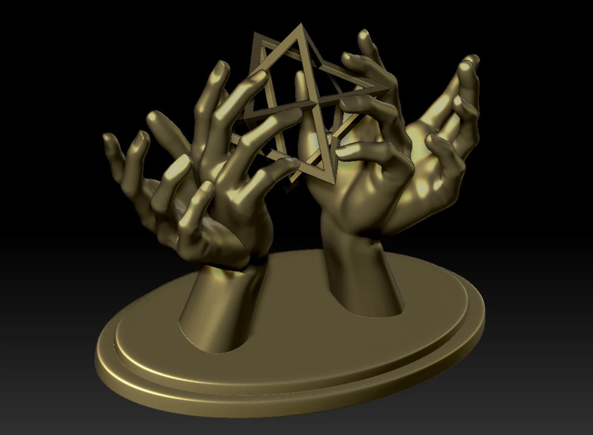
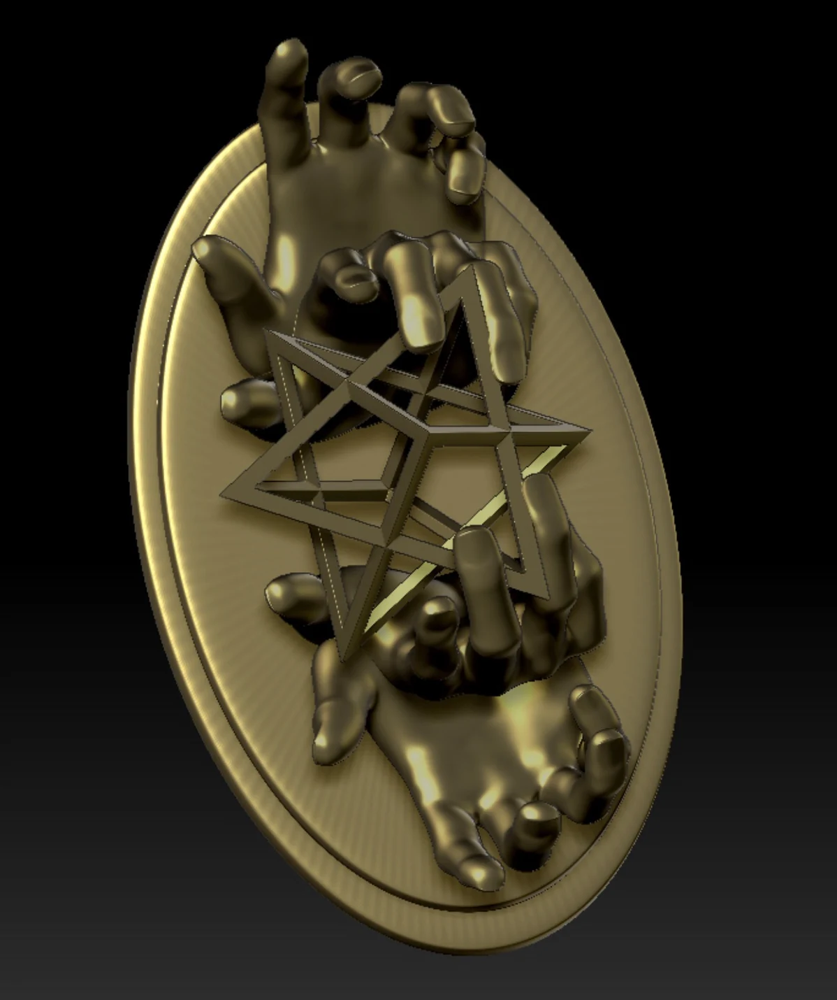
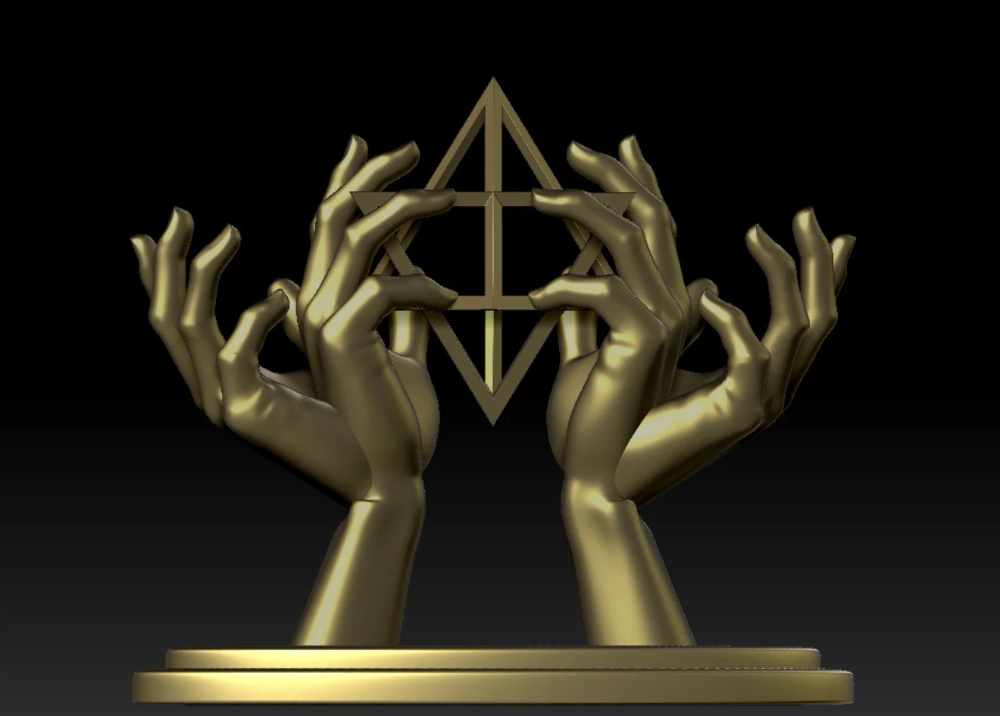
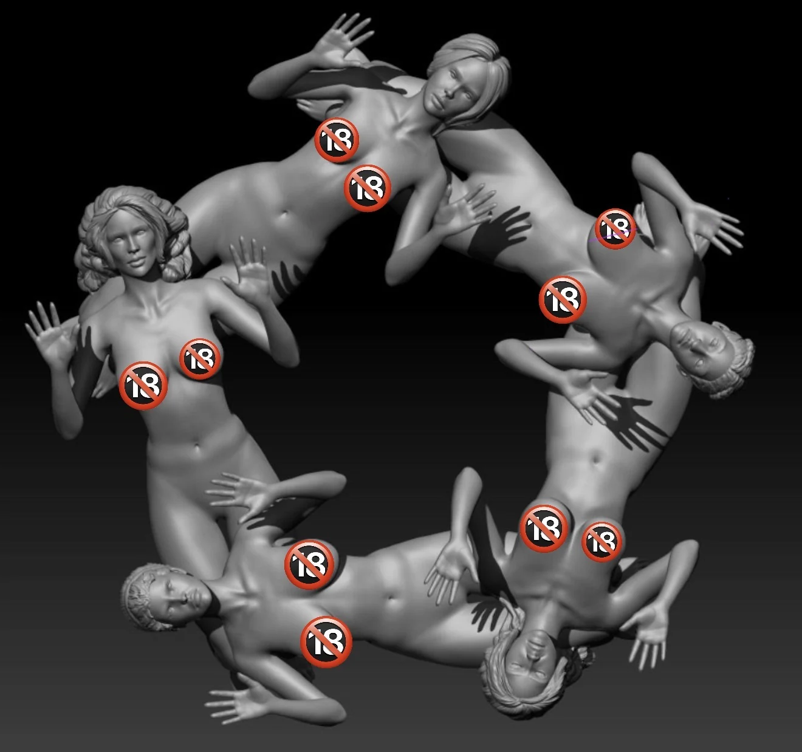
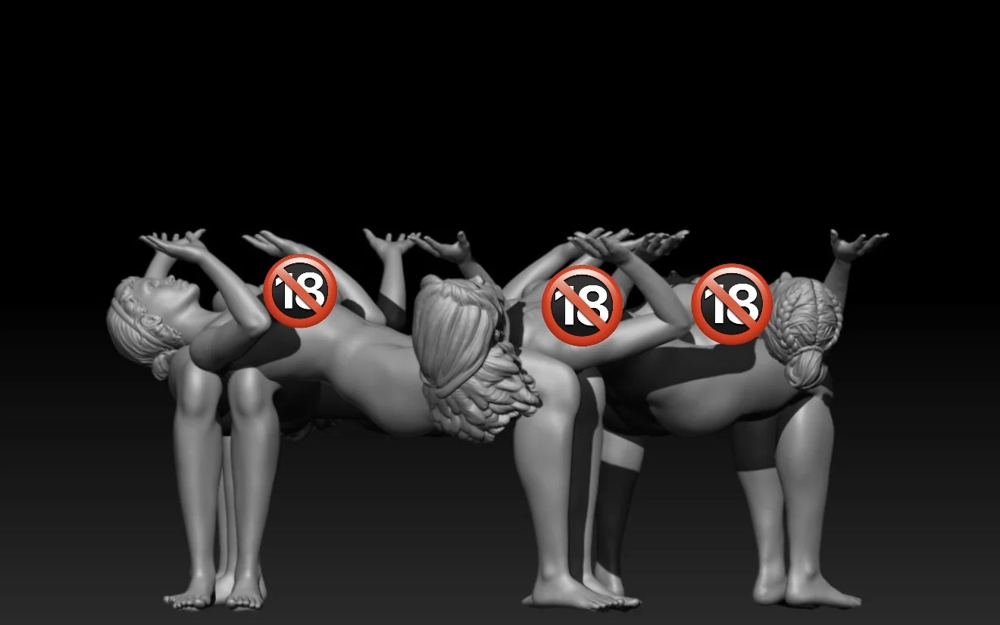

Sculpture studies · Nigel Patch
Geometric
Sculptures
Hands give these two designs their form. In Sacred Hands, they frame a hollow Merkaba. In The Table of Lesbos, five women reach up to carry a sheet of glass. Patch envisions both works in metal.

Proposed metal sculpture
Sacred Hands
Two wrists rise from a stepped oval base. Between the cupped hands sits a hollow Merkaba. Its edges trace two interlocking tetrahedra, one pointing up and the other down. Seen head-on, the fingers nearly meet its outline. Seen from above, the gaps between fingertips and edges become part of the drawing. The digital study uses a gold tone to bring those edges into the light.






Proposed metal and glass table
The Table of Lesbos
Five women form a ring around an open center. Patch intends their hands to support a clear glass tabletop, so a person looking down through the glass could still see the whole arrangement. These two views show the sculptural base on its own.



